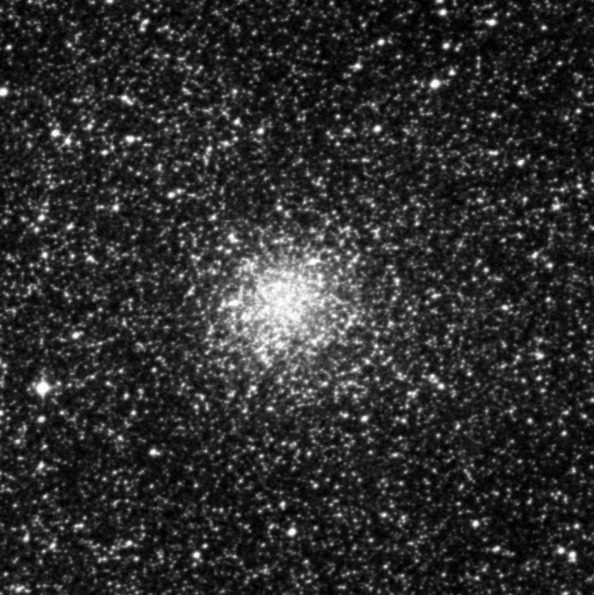
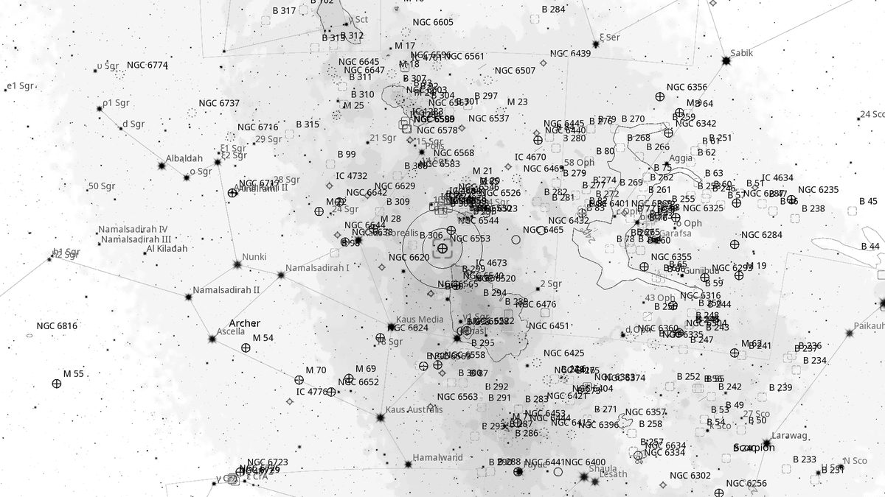
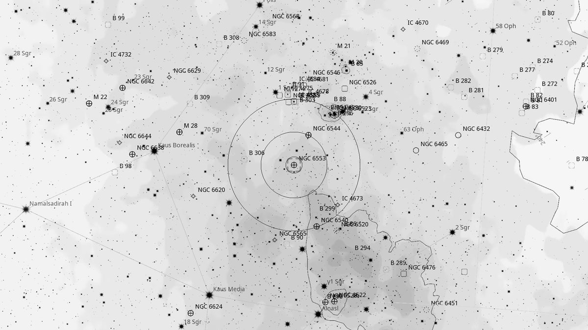
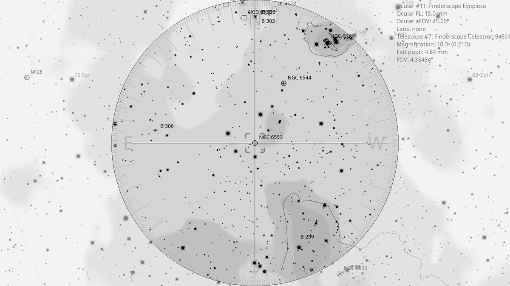
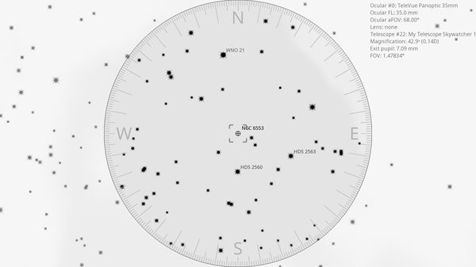

NGC 6553 (GC)
Globular Cluster in Sagittarius
| R.A. | Dec. | Size | Mag | SB | Cnt.St | Type | Distance | Chart |
|---|---|---|---|---|---|---|---|---|
| 18h 09m 16.5s | -25° 54′ 27.0″ | 1.5′ | 8.3 | 8.9 | XI | GC | -- | -- |

Source: POSS-2 UK Schmidt Red (STScI) | Field: 10′ × 10′
Background
NGC 6553 is a moderately bright globular cluster 19,500 light-years away in Sagittarius. Heavily reddened by dust in the Galactic bulge, giving it a notably yellowish cast in deep colour images.
My Observing Notes
25-cm (Meade 10-inch LX200, The Coffee Grinder): 1° from NGC 6544. Despite similar magnitude and only slightly smaller size, appears as a faint halo rising to a slightly brighter core, with no stars resolved at this aperture.(Friday, June 2025)
References
Charts

Ultra-wide view (~25° field)

Wide-field view with Telrad rings (4°, 2°, 0.5°)

Finderscope view (9×50 RACI, ~4.4° TFOV)

Eyepiece view — 35 mm Panoptic on 12-inch f/5 (1.6° TFOV)